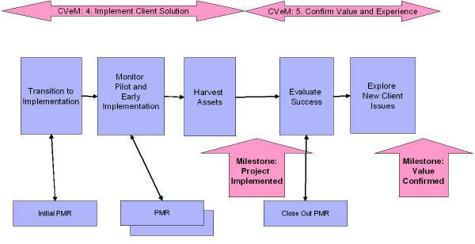

| Activity: CONFIRM Client Value and Experience |
 |
|
| Description | Work Breakdown Structure | Team Allocation | Work Product Usage | ||||||
The purpose of the CVM Confirm activity is to confirm that the client has received the expected value and is satisfied with the experience. Starting with the client’s value drivers and expectations, the team confirms that the client:
The progress indicator for this activity is a satisfied client who is willing to proceed with IBM on additional
projects. Experience with this project is used to update our understanding of the client (the Planning Phase) and
to identify additional opportunities. |
| Parent Activities |
|---|
At this point in the buying process, the client has implemented the solution and confirms the value received. The following are done during this Activity by the relationship owner with involvement of those involved in the pre-sale solution design:
We can verify our value based on :
At the end of this Activity, the client's value is confirmed and the client is open to additional opportunities to work with IBM. Activity Guidance
|
Increasingly our clients may look to an iterative, agile approach to the delivery of value, with more of a series of projects rather than a single implementation project. Therefore, be specific on which aspect of Client Value was expected in a given delivery project and should be confirmed. This chart shows the two Team Solution Design (and CVM) Activities in this phase and the Project Management Reviews that can be used to monitor the implementation of the designed solution (when IBM Services are involved):  |
© Copyright IBM Corp. 1987, 2016 All Rights Reserved |